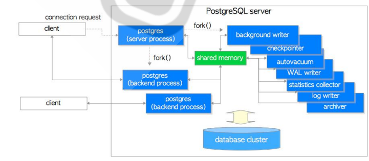

PostgeSQL 数据库 [TOC]
1 PostgreSQL 介绍和特性 1.1 PostgreSQL 介绍 PostgreSQL是当前功能最强大的开源的关系型数据库系统，支持跨平台的多种操作系统，基于C语言开发。通常简称为PG或PGSQL。
PostgreSQL宣称是世界上最先进的开源数据库。PostgreSQL的狂热者认为它的性能缺Oracle不分上下，而且没有高成本的负担。
PostgreSQL拥有看悠久的历史，可以追搠到1985年的加州大学伯克利分校的项目POSTGRES，是1977年的由数据库科学家Michael Stonebraker领导的Ingres项目的衍生品，为了专注于数据库理论的研究，在版本4.2时伯克利正式终止了POSTGRES项目。
1994年，来自中国香港的两名伯克利的研究生Andrew Yu和JollyChen向 POSTGRES中增加了现在SQL语言的解释器，将Postgres改名为Postgres95，并将其源代码发布到互联网上，成为一个开源的数据库管理系统。
1996年，Postgres95名称已经不合时宜，被更改为PostgreSQL，表示它支持查询语言标准，同时版本号也重新从6.0开始。自从版本6.0之后，出现了很多后续发行版本。
PostgreSQL是100%社区驱动的开源项自，由全球范围内千人以上的社区责献者共同维护。PostgreSQL提供了一个完整功能的瓶本，而不像MySQL那样提供多个不同的瓶本，如社区版、商业版及企业版。PostgreSQL的开源协议采用自由的BSD,MTT类型，这种开源协议允许任何人在保留版权声明的情况下使用，戛制，修改或者分享代码。
可靠性是PostgreSQL最优先关注的特性。普遍认为PostgreSQL坚如磐石并且设计精密，能够支持事务处理和关键任务应用。PostgreSQL提供一流的文档服务，包括全面的免费在线手册，以及旧版本手册的存档。社区的支持非常出色，并且有独立厂商提供商业支持。
数据一致性和完整性也是PostgeSQL的高度优先事项。PostgreSQL是完全符合ACID原则（原子性、一致性、隔离性，持久性）的数据库：PostgresQL对数据库访问提供强大的安全控制，不仅能够利用企业安全工具，如：Kerberos和OpenSSL等，还可以根据自己的业务规则自定义核对方法，以确保数据的质量。数据库管理员最喜欢的功能是时间点恢复(point-in-time recovery 简称PITR)期能，它具有灵活性，高可用性特征，能够打造快速故障的热备份服务器，以及快照和恢复到特定时间点等。但这还不是全部.该项目提供了很多方法来管理PostgreSQL，使PostgreSQL具有高可用性、负载均衡和同步功能，因此可以利用这些功能来满足特定需求。
官网:www.postgresql.org
中文社区:http://www.postgres.cn
中文手册:http://www.postgres.cn/docs/12/index.html
参考网站：
https://www.runoob.com/postgresql/postgresql-tutorial.htm1
PostgreSQL开源许可（PostgreSQL Licence)
1 https://www.postgresql.org/about/licence/
MySQL开源许可（GPLv2 with exceptions and LGPLv2 and BSD)
1 MySQL's soure code is available under terms of the GNU General Public License,which also fits the Free Software and Opensource definitions and conforms to theDebian Free Software Guidelines (but not to the Copyfree Standard). lt is alsoavailable under a proprietary license agreement, which is typically intended foruse by those who wish to release software incorporatin:MysQL code without havingto release the source code for the entire application. In practical terms, thismeans that MysQL can be distributed with or without source code, as canPostgresQL, but to distribute without source code in the case of MysQL requirespaying Oracle for a MySQL Commercial License.
1.2 数据库排名 1 https://db-engines.com/en/ranking
1.3 PostgresQL与 MySQL对比 1 http://bbs.chinaunix.net/thread-1688208-1-1.html
特性
MySQL
PostgreSQL
实例
通过执行 MySQL 命令（mysqld）启动实例。一个实例可以管理一个或多个数据库。一台服务器可以运行多个 mysqld 实例。一个实例管理器可以监视 mysqld 的各个实例。
通过执行 Postmaster 进程（pg_ctl）启动实例。一个实例可以管理一个或多个数据库，这些数据库组成一个集群。集群是磁盘上的一个区域，这个区域在安装时初始化并由一个目录组成，所有数据都存储在这个目录中。使用 initdb 创建第一个数据库。一台机器上可以启动多个实例。
数据库
数据库是命名的对象集合，是与实例中的其他数据库分离的实体。一个 MySQL 实例中的所有数据库共享同一个系统编目。
数据库是命名的对象集合，每个数据库是与其他数据库分离的实体。每个数据库有自己的系统编目，但是所有数据库共享 pg_databases。
数据缓冲区
通过 innodb_buffer_pool_size 配置参数设置数据缓冲区。这个参数是内存缓冲区的字节数，InnoDB 使用这个缓冲区来缓存表的数据和索引。在专用的数据库服务器上，这个参数最高可以设置为机器物理内存量的 80%。
Shared_buffers 缓存。在默认情况下分配 64 个缓冲区。默认的块大小是 8K。可以通过设置 postgresql.conf 文件中的 shared_buffers 参数来更新缓冲区缓存。
数据库连接
客户机使用 CONNECT 或 USE 语句连接数据库，这时要指定数据库名，还可以指定用户 id 和密码。使用角色管理数据库中的用户和用户组。
客户机使用 connect 语句连接数据库，这时要指定数据库名，还可以指定用户 id 和密码。使用角色管理数据库中的用户和用户组。
身份验证
MySQL 在数据库级管理身份验证。 基本只支持密码认证。
PostgreSQL 支持丰富的认证方法：信任认证、口令认证、Kerberos 认证、基于 Ident 的认证、LDAP 认证、PAM 认证
加密
可以在表级指定密码来对数据进行加密。还可以使用 AES_ENCRYPT 和 AES_DECRYPT 函数对列数据进行加密和解密。可以通过 SSL 连接实现网络加密。
可以使用 pgcrypto 库中的函数对列进行加密/解密。可以通过 SSL 连接实现网络加密。
审计
可以对 querylog 执行 grep。
可以在表上使用 PL/pgSQL 触发器来进行审计。
查询解释
使用 EXPLAIN 命令查看查询的解释计划。
使用 EXPLAIN 命令查看查询的解释计划。
备份、恢复和日志
InnoDB 使用写前（write-ahead）日志记录。支持在线和离线完全备份以及崩溃和事务恢复。需要第三方软件才能支持热备份。
在数据目录的一个子目录中维护写前日志。支持在线和离线完全备份以及崩溃、时间点和事务恢复。 可以支持热备份。
JDBC 驱动程序
可以从 参考资料 下载 JDBC 驱动程序。
可以从 参考资料 下载 JDBC 驱动程序。
表类型
取决于存储引擎。例如，NDB 存储引擎支持分区表，内存引擎支持内存表。
支持临时表、常规表以及范围和列表类型的分区表。不支持哈希分区表。 由于PostgreSQL的表分区是通过表继承和规则系统完成了，所以可以实现更复杂的分区方式。
索引类型
取决于存储引擎。MyISAM：BTREE，InnoDB：BTREE。
支持 B-树、哈希、R-树和 Gist 索引。
约束
支持主键、外键、惟一和非空约束。对检查约束进行解析，但是不强制实施。
支持主键、外键、惟一、非空和检查约束。
存储过程和用户定义函数
支持 CREATE PROCEDURE 和 CREATE FUNCTION 语句。存储过程可以用 SQL 和 C++ 编写。用户定义函数可以用 SQL、C 和 C++ 编写。
没有单独的存储过程，都是通过函数实现的。用户定义函数可以用 PL/pgSQL（专用的过程语言）、PL/Tcl、PL/Perl、PL/Python 、SQL 和 C 编写。
触发器
支持行前触发器、行后触发器和语句触发器，触发器语句用过程语言复合语句编写。
支持行前触发器、行后触发器和语句触发器，触发器过程用 C 编写。
系统配置文件
my.conf
Postgresql.conf
数据库配置
my.conf
Postgresql.conf
客户机连接文件
my.conf
pg_hba.conf
XML 支持
有限的 XML 支持。
有限的 XML 支持。
数据访问和管理服务器
OPTIMIZE TABLE —— 回收未使用的空间并消除数据文件的碎片 myisamchk -analyze —— 更新查询优化器所使用的统计数据（MyISAM 存储引擎） mysql —— 命令行工具 MySQL Administrator —— 客户机 GUI 工具Vacuum —— 回收未使用的空间 Analyze —— 更新查询优化器所使用的统计数据 psql —— 命令行工具 pgAdmin —— 客户机 GUI 工具
并发控制
支持表级和行级锁。InnoDB 存储引擎支持 READ_COMMITTED、READ_UNCOMMITTED、REPEATABLE_READ 和 SERIALIZABLE。使用 SET TRANSACTION ISOLATION LEVEL 语句在事务级设置隔离级别。
支持表级和行级锁。支持的 ANSI 隔离级别是 Read Committed（默认 —— 能看到查询启动时数据库的快照）和 Serialization（与 Repeatable Read 相似 —— 只能看到在事务启动之前提交的结果）。使用 SET TRANSACTION 语句在事务级设置隔离级别。使用 SET SESSION 在会话级进行设置。
**MySQL相对于PostgreSQL的劣势：
**
MySQL PostgreSQL
最重要的引擎InnoDB很早就由Oracle公司控制。目前整个MySQL数据库都由Oracle控制。
BSD协议，没有被大公司垄断。
对复杂查询的处理较弱，查询优化器不够成熟
很强大的查询优化器，支持很复杂的查询处理。
只有一种表连接类型:嵌套循环连接(nested-loop),不支持排序-合并连接(sort-merge join)与散列连接(hash join)。
都支持
性能优化工具与度量信息不足
提供了一些性能视图，可以方便的看到发生在一个表和索引上的select、delete、update、insert统计信息，也可以看到cache命中率。网上有一个开源的pgstatspack工具。
InnoDB的表和索引都是按相同的方式存储。也就是说表都是索引组织表。这一般要求主键不能太长而且插入时的主键最好是按顺序递增，否则对性能有很大影响。
不存在这个问题。
大部分查询只能使用表上的单一索引;在某些情况下，会存在使用多个索引的查询,但是查询优化器通常会低估其成本,它们常常比表扫描还要慢。
不存在这个问题
表增加列，基本上是重建表和索引，会花很长时间。
表增加列，只是在数据字典中增加表定义，不会重建表
存储过程与触发器的功能有限。可用来编写存储过程、触发器、计划事件以及存储函数的语言功能较弱
除支持pl/pgsql写存储过程，还支持perl、python、Tcl类型的存储过程：pl/perl，pl/python，pl/tcl。 也支持用C语言写存储过程。
不支持Sequence。
支持
不支持函数索引，只能在创建基于具体列的索引。 不支持物化视图。
支持函数索引，同时还支持部分数据索引，通过规则系统可以实现物化视图的功能。
执行计划并不是全局共享的, 仅仅在连接内部是共享的。
执行计划共享
MySQL支持的SQL语法(ANSI SQL标准)的很小一部分。不支持递归查询、通用表表达式（Oracle的with 语句）或者窗口函数（分析函数）。
都 支持
不支持用户自定义类型或域(domain)
支持。
对于时间、日期、间隔等时间类型没有秒以下级别的存储类型
可以精确到秒以下。
身份验证功能是完全内置的，不支持操作系统认证、PAM认证，不支持LDAP以及其它类似的外部身份验证功能。
支持OS认证、Kerberos 认证 、Ident 的认证、LDAP 认证、PAM 认证
不支持database link。有一种叫做Federated的存储引擎可以作为一个中转将查询语句传递到远程服务器的一个表上,不过,它功能很粗糙并且漏洞很多
有dblink，同时还有一个dbi-link的东西，可以连接到oracle和mysql上。
Mysql Cluster可能与你的想象有较大差异。开源的cluster软件较少。 复制(Replication)功能是异步的,并且有很大的局限性.例如,它是单线程的(single-threaded),因此一个处理能力更强的Slave的恢复速度也很难跟上处理能力相对较慢的Master.
有丰富的开源cluster软件支持。
explain看执行计划的结果简单。
explain返回丰富的信息。
类似于ALTER TABLE或CREATE TABLE一类的操作都是非事务性的.它们会提交未提交的事务，并且不能回滚也不能做灾难恢复
DDL也是有事务的。
PostgreSQL主要优势：
1 2 3 4 1. PostgreSQL完全免费，而且是BSD协议，如果你把PostgreSQL改一改，然后再拿去卖钱，也没有人管你，这一点很重要，这表明了PostgreSQL数据库不会被其它公司控制。oracle数据库不用说了，是商业数据库，不开放。而MySQL数据库虽然是开源的，但现在随着SUN被oracle公司收购，现在基本上被oracle公司控制，其实在SUN被收购之前，MySQL中最重要的InnoDB引擎也是被oracle公司控制的，而在MySQL中很多重要的数据都是放在InnoDB引擎中的，反正我们公司都是这样的。所以如果MySQL的市场范围与oracle数据库的市场范围冲突时，oracle公司必定会牺牲MySQL，这是毫无疑问的。
1 https://blog.csdn.net/dqcfkyqdxym3f8rb0/article/details/121804125
1.4各种数据库性能比较 1 https://github.com/digoal
1.5 PostgreSQL各版本的特性矩阵 1 https://www.postgresql.org/about/featurematrix/
PostgreSQL的优势
PostgreSQL数据库是目前功能最强大的开源数据库，它是最接近工业标准SQL92的查询语言，并且正在实现新的功能以兼容最新的SQL标准SQL2003。
稳定可靠：PostgreSQL是唯一能做到数据零丢失的开源数据库。有报道称国外的部分银行也在使用PostgreSQL数据库。
开源免费：PostgreSQL数据库是开源的、免费的，而且是BSD协议，在使用和二次开发上基本没有限制。
支持广泛：PostgreSQL数据库支持大量的主流开发语言，包括C、C++、Perl、Python、Java、Tcl,PHP等。
PostgreSQL社区活跃：PostgreSQL基本上每三个月推出一个补丁版本，这意味着已知的BUG很快会被修复，有应用场景的需求也会及时得到响应。
2 PostgreSQL安装 安装方法分为两种：
二进制安装包进行安装
各个Linux的发行版本中，很多都内置了PostgreSQL的二进制安装包，但内置的版本可能较旧。对于二进制包安装的方法是通过不同发行版本的Linux下的包管理器进行的，如在RHEL系统相关版本下用yum 命令，在Debian或Ubuntu下使用apt命令
源码编译安装
使用源码编译安装相对更灵活，用户可以有更多的选择，可以选择较新的版本、配置不同的编译选项,编译出用户需要的功能。
官方安装文档：
1 https://www.postgresql.org/download/
2.1 二进制包安装 PostgreSQL支持各种操作系统，并提供相关二进制包包的安装方法
1 2 https://www.postgresql.org/download/linux/redhat/
2.1.1 RHEL/CentOS/Rocky安装PostgreSQL
范例：Rocky8利用官方源安装PostgreSQL12
1 2 3 4 5 6 7 8 9 10 11 12 13 14 15 16 17 18 19 20 21 22 23 24 25 26 27 28 29 30 31 32 33 34 [20:12:15 root@rocky8 ~]#sudo dnf install -y https://download.postgresql.org/pub/repos/yum/reporpms/EL-8-x86_64/pgdg-redhat-repo-latest.noarch.rpm# 禁用内置的postgresq1 # 初始化数据库 # 验证成功
范例：Rocky8利用官方源安装PostgreSQL
1 2 3 4 5 6 7 8 9 10 11 12 13 14 15 16 17 18 19 20 21 22 23 24 25 26 27 28 29 30 31 32 33 34 35 36 37 38 39 40 41 [20:24:59 root@rocky8 ~]#yum install -y postgresql-server# 默认无法启动 # 查看日志提示初始化 # 初始化数据库
2.1.2 Ubuntu 安装PostgreSQL 范例：Ubuntu利用官方源安装PostgreSQL-12
1 2 3 4 5 6 root@ubuntu:~# sh -c 'echo "deb https://apt.postgresql.org/pub/repos/apt $(lsb_release -cs)-pgdg mai n" > /etc/apt/sources.list.d/pgdg.list'
范例：Ubuntu20.04利用系统源安装PostgreSQL-12
1 2 3 4 5 6 7 8 9 root@ubuntu:~# apt update
2.2 源码编译安装 2.2.1 编译安装过程说明 官方帮助
1 2 https://www.postgresql.org/docs/current/installation.html
第一步：下载源代码
1 2 https://www.postgresql.org/ftp/source/
第二步：编译安装。过程与Linux下其他软件的编译安装过程相同
./configure
make
make install
第三步：编译安装完成后执行如下步骤
使用initdb命令初使用化数据库
启动数据库实例
2.2.2 系统初始化和优化配置 1 2 3 4 5 6 7 8 9 10 11 12 13 14 15 16 17 18 19 20 # 关闭防火墙和SELinux等 # 内核参数优化 # vi /etc/sysctl.conf # vim /etc/security/limits.conf
2.2.3 安装依赖包 1 2 3 4 5 # RHEL系统 # ubuntu
2.2.4 源码编译安装 1 2 3 4 5 6 7 8 9 10 11 12 13 14 15 16 17 18 19 20 21 22 23 24 25 26 27 28 29 # 下载解压缩 # 查看安装说明 # 开始编译三步曲，默认安装在/usr/local/pgsq1 # 查看编译选项（可选）
2.2.5 创建数据库用户和组 PostgreSQL默认不支持以root身份启动服务，虽然也可修改源码实现root启动，但基于安全考虑不建议，因此必须创建一个用于启动PostgrepSQL的普通用户
1 2 3 4 # 创建数据库用户和组，注意此用户需要可以交互登录
2.2.6创建数据目录并授权 1 2 [22:11:46 root@rocky8 ~]#mkdir -pv /pgsql/data/
2.2.7设置环境变量 1 2 3 4 5 6 7 8 9 10 11 12 13 [22:14:38 root@rocky8 ~]#vim /etc/profile.d/pgsql.sh# 验证
2.2.8初始化数据库 1 2 3 4 5 6 7 8 9 10 11 12 13 14 15 [22:19:15 root@rocky8 ~]#su - postgres# 初始化 # 如果没有指定选项-D<datadir>，按环境变量$PGDATA 指定的路径进行初始化 # 生产建议初始化方式
2.2.9 启动和关闭服务 1 2 3 4 5 6 7 8 9 10 11 12 13 14 15 16 17 18 19 20 21 22 23 24 25 26 27 28 29 30 31 32 33 # 启动 # 停止 # 启动命令： # 停止数据库的命令如下： # smart关闭 # fast关闭，推荐使用，也是默认模式 # immediate 相当于ki11-9 # 或者发送信号，直接向数据库主进程发送的signal信号有以下三种。 # 重启 # 源码目录中内置PostgresQL的启动脚本
范例：实现开机自启动PostgreSQL
1 2 3 4 5 6 7 8 9 10 11 [22:49:16 root@rocky8 ~]#cp postgresql-12.9/contrib/start-scripts/linux /etc/init.d/postgressql# 修改下面两行
范例：创建 service 文件
1 2 3 4 5 6 7 8 9 10 11 12 13 14 15 16 17 18 19 20 21 22 23 24 25 26 27 28 29 30 31 32 33 34 35 36 37 38 39 40 41 42 43 44 45 46 47 # 创建新的service文件 # 确认文件内容 # /usr/lib/systemd/system/postgresql.service
2.2.10 查看编译和相关信息 1 2 3 4 5 6 7 8 9 10 11 12 13 14 15 16 17 18 19 20 21 22 23 24 [14:42:03 root@rocky8 ~]#pg_config
2.2.11 源码编译一键安装脚本 1 2 3 4 5 6 7 8 9 10 11 12 13 14 15 16 17 18 19 20 21 22 23 24 25 26 27 28 29 30 31 32 33 34 35 36 37 38 39 40 41 42 43 44 45 46 47 48 49 50 51 52 53 54 55 56 57 58 59 60 61 62 63 64 65 66 67 68 69 70 71 72 73 74 75 76 77 78 79 80 81 82 83 84 85 86 87 88 89 90 91 92 93 94 95 96 97 98 99 100 101 102 103 104 105 106 107 108 109 110 111 112 113 114 # !/bin/bash # # Author: tangbeiting # QQ: 306876058 # Date: 2023-09-16 # FileName: postgresql_src_install.sh # URL: https://xiaohexie00.github.io/ # Description: The test script # Copyright (C): 2023 ALL rights reserved # **************************************************************************
2.3 pg_ctl 命令管理PostgreSQL pg_ctl是一个实用的命令行工具，有以下常见功能：
初始化 PostgresQL数据库实例
启动、终止或重启PostgresQL数据库服务。
查看PostgreSQL数据库服务的状态
让数据库实例重新读取配置文件。允许给一个指定的PostgresQL进程发送信号
控制 standby 服务器为可读写
在Windows平台下允许为数据库实例注册或取消一个系统服务
pc_ctl 命令格式
1 2 3 4 5 6 7 8 9 10 11 12 13 14 15 16 [16:58:00 root@rocky8 ~]#pg_ctl --help
2.3.1初始化实例 初始化PostgresQL数据库实例的命令如下：
1 2 3 4 5 6 7 8 9 10 11 # 先切换用户 # 初始化数据库 # pg_ctl命令调用initdb命令创建了一个新的PostgresQL数据库实例，参数说明如下。
范例：创建新的数据库实例数据
1 2 3 4 5 6 7 8 9 10 11 12 13 14 15 16 17 18 19 20 21 22 23 24 25 26 27 28 29 30 31 32 33 34 35 36 37 38 39 [17:31:01 root@Master-DNS ~]#chown postgres: /pgsql/
2.3.2服务管理 2.3.2.1查看服务状态 查询数据库实例状态的命令如下：
1 pg_ctl status [-D datadir]
范例：
1 2 3 [17:34:55 postgres@Master-DNS ~]$pg_ctl status -D /pgsql/data2
2.3.2.2启动服务 启动PostgreSQL服务的命令：
1 2 3 4 5 6 7 8 9 10 11 pg_ctl start [-w] [-t seconds] [-s] [-D datadir] [-1 filename] [-o options] [-ppath] [-c]# 参数说明如下。
范例：
1 2 3 4 5 6 7 8 9 10 11 [17:40:57 postgres@Master-DNS ~]$pg_ctl status -D /pgsql/data2
2.3.2.3停止服务 停止PostgresQL数据库的命令如下：
1 2 3 4 pg_ctl stop [-w] [-t seconds] [-s] [-D datadir] [-m s[mart] 1 f[ast] | i[mmediate] ]# 参数说明如下。
范例：
1 2 3 4 5 6 7 8 9 10 11 [17:42:00 postgres@Master-DNS ~]$pg_ctl stop -D /pgsql/data2
2.3.2.4重启服务 重启PostgresQL数据库的命令如下：
1 2 3 pg_ctl restart [-w] [-t seconds][-s] [-D datadir] [-c] [-m s[mart] [ f[ast] [i[mmediate] ] [-o "options ]# 此命令中的参数与启动或停止命令中的参数含义相同
2.3.2.5加载配置 在配置文件中改变参数后，需要使用上面这条命令使参数生效
1 2 3 4 5 6 7 8 9 # 修改配置文件 postgresql.conf后，让修改生效的方法有两种 # 方法一：在操作系统使用下面命令 # 方法二：在psql中使用如下命令 # 注意：加载配置操作只针对一些配置的修改生效，有些配置需要重新启动服务才能生效
范例：
1 2 3 4 5 6 7 8 9 10 11 12 13 14 15 16 17 18 19 20 21 22 23 24 # 注意：修改端口不支持reload,只能restart # 修改端口
在流复制架构中，在standby主机执行promote提升操作，恢复正常的读写操作
1 pg_ct1 promote [-D DATADIR] [-W] [-t SECS] [-s]
备用服务器在指定数据目录中运行提升模式命令，结束备用模式并开始读写操作
3 PostgreSQL管理 3.1配置文件介绍 PostgreSQL使用环境变量PGDATA指向的目录做为数据存放的目录。这个目录是在安装时指定的，所以在安装时需要指定一个合适的目录作为数据目录的根目录，而且，每一个PG数据库实例都需要有这样的一个目录。此数据目录的初始化是使用命令initdb来完成的。
初始化完成后，PGDATA数据目录下就会生成三个配置文件。
1 2 3 postgresql.conf #数据库实例的主配置文件，基本上所有的配置参数都在此文件中。
3.2数据库相关概念 3.2.1数据库的结构组织
在一个PostgreSQL数据库系统中，数据的组织结构可以分为以下五层：
实例：一个PostgreSQL对应一个安装的数据目录$PGDATA,即一个instance实例
数据库：一个PostgresQL数据库服务下可以管理多个数据库，当应用连接到一个数据库时，一般只能访问这个数据库中的数据，而不能访问其他数据库中的内容
默认情况下初始实例只有三个数据库：postgres、templateo、template1
模式：一个数据库可以创建多个不同的名称空间即Schema,用于分隔不同的业务数据
表和索引：一个数据库可以有多个表和索引。在PostgreSQL中表的术语称为Relation，而在其他数据库中通常叫Table
行和列：每张表中有很多列和行数据。在PostgreSQL中行的术语一般为“Tuple”，而在其他数据库中则叫”Row”。
3.2.2 PostgreSQL中的术语 PostgreSQL有一些术语与其他数据库中不一样，了解了这些术语的意思，就能更好地看懂PostgreSQL中的文档。
与其他数据库不同的术语如下。
Relation:表示表table或索引index,具体表示的是Table还是Index需要看具体情况
Tuple：表示表中的行，在其他数据库中使ROW来表示
Segment:每个表和索引都单独对应一个文件,即为segment,如果文件大小超过1GB,会创建多个相同名称但后缀不同的文件
Page：表示在磁盘中的数据块。在文件中以块为单位存放数据，默认值为8KB,最大可以为32KB
Buffer：表示在内存中的数据块。
范例：编译时可以指定segment大小
1 2 3 [18:00:19 root@rocky8 postgresql-12.9]#./configure --help | grep segment
3.2.3模版数据库template0和template1 template1和template0是PostgreSQL的模板数据库。所谓模板数据库就是创建新database时,PostgreSQL会基于模板数据库制作一份副本，其中会包含所有的数据库设置和数据文件。
PostgreSQL安装好以后会默认附带两个模板数据库：默认模板库为template1和template1。
默认模板库为template1,也可以指定template0
比如:create database db1 template template0
不要对templateo模板数据库进行任何修改，因为这是原始的干净模板
如果其它模板数据库被搞坏了，基于这个数据库做一个副本就可以了。
如果希望定制自己的模板数据库，那么请基于template1进行修改，或者自己另外创建一个模板数据库再修改。
template1和template0的区别主要有两点：
template1可以连接,template0不可以连接。
使用template1模板库建库时不可指定新的encoding和locale,而template0可以。
注意：template0和template1都不能被删除。
3.2.4模式schema 模式schema是数据库中的一个概念，可以将其理解为一个命名空间。不同的模式下可以有相同名称的表、函数等对象且互相不冲突。提出模式的概念是为了便于管理，只要有权限，每个模式(schema)的对象可以互相调用。
在PostgreSQL中，一个数据库包含一个或多个模式，一个模式中又包含了表、函数及操作符等数据库对象。
在PostgresQL中，不能同时访问不同数据库中的对象，当要访问另一个数据库中的表或其他对象时，需要重新连接到这个新的数据库，而模式没有此限制。一个用户在连接到一个数据库后，就可以同时访问这个数据库中多个模式的对象。
通常情况下，创建和访问表的时候都不用指定模式，实际上这时访问的都是public模式。每当我们创建一个新的数据库时，PostgreSQL都会自动创建一个名为public的模式。当登录到该数据库时，如果没有特殊的指定，都是以该模式public操作各种数据对象的。
我们需要使用模式有以下几个主要原因：
允许多个用户在使用同一个数据库时彼此互不干扰。
把数据库对象放在不同的模式下，然后组织成逻辑组，让它们更便于管理。
第三方的应用可以放在不同的模式中，这样就不会和其他对象的名字冲突了。
1 2 3 4 5 6 7 8 # 创建模式 # 删除模式 # 查看模式
要访问指定模式中的对象，需要先指定一个包含模式名及表名的名字，模式和表之间用一个“点”分开，
如下：
3.3psql工具介绍和基本用法 psql是PostgreSQL中的一个命令行交互式客户端工具，类似MySQL的mysql和Oracle中的命令行工具sqlplus，它允许你交互地输入SQL或命令，然后把它们发出给PostgreSQL服务器，再显示SQL或命令的结果。而且，输入的内容还可以来自于一个文件。此外，它还提供了一些命令和多种类似shell的特性来实现书写脚本，从而实现对大量任务的自动化工作。
虽然也可以使用PostgreSQL中图形化的客户端工具（如pgadmin）来实现上述功能。但如果掌握了psql的使用方法，将会体会到它的方便之处。因为psql是一个字符界面的工具，没有图形化工具使用上的一些限制。psql 与 pgAdminlll之间的关系类似于vi与某些图形化工具的关系。
psql 的历史命令与补全的功能
可以使用上下键把以前使用过的命令或SQL语句调出来
连续按两个tab键表示把命令补全或给出提示输入
psql 命令格式
1 2 3 4 5 6 7 8 9 10 11 12 13 14 psq1 -h <hostname or ip>-p<端口>[数据库名称]-u[用户名称]# 最后两个参数是数据库名和用户名 # 这些连接参数也可以用环境变量指定，比如： # 然后运行psq1即可,其效果与运行psq1-h 10.0.0.200-p5432 testdb postgres相同。 # 可通过下面命令查看详细帮助：man /apps/pgsq1/share/man/manl/psq1.1
范例：psql本地登录PGSQL
1 2 3 4 5 6 7 8 9 10 11 12 13 14 15 16 17 18 # 方法1 # 方法2
范例：远程登录
1 2 3 4 5 6 7 8 9 10 11 12 13 14 15 16 17 18 19 20 21 # 注意：默认PostgresQL不支持远程登录，需要修改配置和授权才可以 # 如果不指定he11odb数据库，默认连接和用户名同名的数据库 # IPv4 local connections:
范例：psql命令中直接执行SQL
1 2 3 4 5 6 [21:50:45 root@rocky8 ~]#psql -U postgres -h 10.0.0.3 -p 5432 -d postgres -c "select current_time"
范例：psql 命令中执行文件中的SQL
1 2 3 4 5 6 7 8 9 10 11 [21:54:53 root@rocky8 ~]#psql -U postgres -h 10.0.0.3 -p 5432 -d postgres -f test.sql
3.4连接管理 3.4.1访问控制配置文件介绍 在PostgreSQL中，带有一个网络防火墙的功能的文件pg_hba.conf,可以控制允许设置哪些IP的机器访问数据库服务器。
HBA的意思是host-based authentication,也就是基于主机的认证,即实现PostgreSQL防火墙功能
initdb初始化数据目录时，会生成一个默认的pg_hba.conf文件。
pg_hba.conf 文件的格式由很多记录组成，每条记录占一行。
以#开头的行为注释及空白行会被忽略。
一条记录由若干个空格或由制表符分隔的字段组成，如果字段用引号包围，那么它可以包含空白。
每条记录声明一种连接类型、一个客户端IP地址范围(如果和连接类型相关）、一个数据库名、一个用户名字，以及对匹配这些参数的连接所使用的认证方法。
第一条匹配连接类型、客户端地址、连接请求的数据库名和用户名的记录将用于执行认证。如果选择了一条记录而且认证失败，那么将不再考虑后面的记录；如果没有匹配的记录，访问将被拒绝。即从上向下匹配，一旦匹配则不会再向下检查
每条记录可以是下面七种格式之一：
1 2 3 4 5 6 7 1) local <dbname> <user> <auth-method>[auth-options]
pg_hba.conf文件为pg实例的防火墙配置文件。配置文件格式分为5部分：
1 TYPE DATABASE USER ADDRESS METHOD
·第1个字段只能是下面的取值。
local：这条记录匹配通过UNIX域套接字的连接认证。没有这种类型的记录，就不允许有UNIX域套接字的连接。当 psq后面不指定主机名或IP地址时，即用UNIX域套接字的方式连接数据库。
host:这条记录匹配通过TCP/IP进行的连接。包括了SSL和非SS的连接。
hostssl:这条记录匹配使用TCP/IP的SSL连接。必须是使用SSL加密的连接，且要使用这个选项，编译服务器时必须打开SSL支持，启动服务器时必须打开SSL配置选项。
hostnossl：这条记录与hostssl相反，它只匹配那些在TCP/IP上不使用SSL的连接请求。
第2个字段用于设置一个数据库名称，如果设置为all，表示可以匹配任何数据库，注意：如果设置为replication时比较特殊，表示允许流复制连接，而不是允许连接到一个名为”replication”的数据库上。
第3个字段用于设置一个用户的名称，如果设置为all，表示可以匹配任何用户。
第4个字段<ip/masklen>表示允许哪些IP地址来访问此服务器，如192.168.1.10/32表示只允许192.168.1.10这台主机访问数据库，192.168.1.0/24表示IP地址前缀为192.168.1.X的主机都允许访问数据库服务器。
第5个字段表示验证方法，PostgreSQL支持的认证配置方式很多，最常用的认证方法是trust、reject、md5和ident方法。
1 2 3 4 5 6 7 8 9 10 11 12 13 14 #METHOD有如下值可选
范例：
1 2 3 4 5 6 7 8 9 10 11 12 13 14 15 16 17 18 19 20 # 如果一台机器只给数据库使用，而没有其他用途，则可以在pg_hba.conf中加上下面一行配置： # 该配置表示在这台机器上，任何操作系统的用户都可以使用任何数据库用户(包括数据库超级用户)连接到数据库而不需要任何密码。因为这台主机只供数据库使用，可以把不用的操作系统用户都禁止掉，以保证安全性。 # 如果数据库中有一个用户“dba”，操作系统中也有一个用户“dba” # 在操作系统"dba”用户下连接数据库不需要密码验证的设置方法： # 如果想在数据库主机上使用密码验证，可以使用下面的配置项： # 如果想让其他主机的连接都使用md5密码验证，则使用如下配置： # 允许用户通过10.0.0.0/24的远程主机进行md5验证登录 # TYPE DATABASE USER ADDRESS METHOD # 允许用户wang通过任意远程主机进行md5验证登录test数据库 # TYPE DATABASE USER ADDRESS METHOD
3.4.2打开远程连接 默认安装完的PG只监听1ocal。如果要远程连接，需要监听对外提供服务的IP地址。
范例：实现远程连接
1 2 3 4 5 6 7 8 9 10 11 12 13 14 15 16 17 18 19 20 21 22 23 24 25 26 27 28 29 30 # 修改用户postgres密码 # 查看监听地址和端口，默认为127.0.0.1：5432 # IPv4 local connections: # 重启服务生效 # 测试远程登录
范例：利用.pgpass文件实现免密码连接远程posgresql
1 2 3 4 5 6 7 8 9 10 11 12 13 14 15 16 17 18 19 20 21 22 23 24 25 26 27 28 29 30 [22:31:43 root@rocky8 ~]#vim .pgpass# 格式：hostname:port:database:username:password # psq1默认连接本机，需要指定和.pgpass文件内容相匹配信息才可以使用.pgpass文件连接
3.5常用操作 3.5.1查看psql帮助 1 2 3 4 5 6 7 8 9 10 11 12 # 列出psq1帮助用法 # 列出以\开头的命令，即psq1的命令 # 列出所有SQL命令的帮助，注意：SQL语句必须以；结束 # 查看指定SQL的帮助
范例：
1 2 3 4 5 6 7 8 9 10 11 12 13 14 15 16 17 18 19 20 21 22 23 24 25 26 27 28 29 30 31 32 33 34 35 36 37 38 39 40 41 42 43 44 45 46 47 48 49 50 51 52 53 54 55 56 57 58 59 60 61 62 63 64 65 postgres=# help
3.5.2设置显示信息的格式 1 2 3 4 5 6 7 8 # 后续查询将坚着显示，类似于MySQL中的\G # 开启命令执行时长提示 # 显示详细的信息，可以打印出报出问题的源代码位置
范例：
1 2 3 4 5 6 postgres=# select pg_sleep(5);
范例：查看出错对应的源代码位置
1 2 3 4 5 6 7 8 9 10 11 12 postgres=# \set VERBOSITY verbose# 说明：错误对应的是parse_relation.c文件中的3349行中errorMissingColumn函数 # 找到错误位置
3.5.3数据库的创建和删除 创建数据库可以使用SQL语句create database实现，也可以利用createdb命令创建数据库
createdb是一个SQL命令CREATE DATABASE的封装。
createdb 命令语法格式如下：
1 2 3 4 5 6 7 8 9 10 11 12 13 14 15 16 17 createdb [option...] [dbname [description]]
删除数据库可以使用SQL语句drop database 实现
范例：创建数据库
1 2 3 4 5 6 7 8 9 10 11 12 13 14 15 16 17 18 19 20 # 方法1 # 方法2
范例：删除数据库
1 2 [20:44:36 root@Master-DNS ~]#psql
范例：查看数据库存放目录的路径
1 2 3 4 5 6 7 8 9 10 11 12 13 postgres=# select oid,datname from pg_database;
3.5.4管理和查看模式 一个数据库包含一个或多个已命名的模式，模式又包含表。模式还可以包含其它对象，包括数据类型、函数、操作符等。同一个对象名可以在不同的模式里使用而不会导致冲突；比如，schema1和schema2都可以包含一个名为test的表
1 2 3 4 5 6 7 8 9 10 11 12 13 14 15 16 17 18 19 20 21 22 23 24 25 26 27 28 29 30 31 32 33 34 35 36 37 38 39 40 41 42 43 44 45 46 47 48 49 50 51 52 53 54 55 56 57 58 59 # 创建模式 # 删除模式 # 列出所有schema
3.5.5查看和连接数据库 1 2 3 4 5 6 7 8 9 10 11 12 13 14 15 16 17 18 19 20 21 22 23 24 25 26 27 28 29 30 31 32 33 34 35 36 37 38 39 40 41 42 43 44 45 46 47 48 49 50 51 52 # 列出所有数据库名，相当于MySQL中的show databases; # 显示数据库详细信息，比如大小 # 查看当前连接信息 # 查看当前来南京详细信息 # 连接数据库，相当于use
3.5.6管理表 PostgreSQL支持多种数据类型实现表结构的创建
范例：查看支持数据类型
1 2 3 4 5 6 7 8 9 10 11 12 13 14 15 16 17 18 19 20 21 22 db2=# select typname from pg_type;
范例：管理表
1 2 3 4 5 6 7 8 9 10 11 12 13 14 15 16 17 18 19 20 21 22 23 24 25 26 27 28 29 30 31 32 33 34 35 36 37 38 39 40 41 42 43 44 45 46 47 48 49 50 51 52 53 54 55 56 57 58 59 60 61 62 63 64 65 66 67 68 69 70 71 testdb=# \c testdb # # 复制表结构，不复制数据
3.5.7查看表和表信息 1 2 3 4 5 6 7 8 9 10 11 12 13 14 15 16 17 18 19 20 21 22 23 24 25 26 27 28 29 30 31 32 33 34 35 36 37 38 39 40 41 42 43 44 45 46 47 48 49 50 51 52 53 54 55 56 57 58 59 60 61 62 63 64 65 66 67 68 69 70 71 72 73 74 75 76 77 78 79 80 81 82 83 84 85 86 # 列出所有表，视图，序列 # 列出public的schema中所有的表名,相当于show tables; # 查看t1的表信息 # 支持通配符*和？，以下显示所有t开头的表 # 列出myschema模式的表结构 # 查看t1的表结构，相当于desc # 列出所有表信息，包括大小 # 列出表信息 # 列出表大小信息 # 查看表大小
范例：查看表对应的文件径
1 2 3 4 5 6 7 8 9 10 11 12 13 14 15 16 17 18 19 20 21 # 查看testdb数据库文件夹路径OID # 查看tb1表文件relid
范例：查看当前库中的所有表的统计信息
1 2 3 4 5 6 7 8 9 10 11 12 13 14 15 16 17 18 19 20 21 22 23 24 25 26 27 28 29 30 31 32 33 34 35 36 37 38 39 40 41 42 43 44 45 46 47 48 49 50 51 52 53 54 55 56 57 58 59 60 testdb=# select * from pg_stat_all_tables;
3.5.8系统表(system catalogs) 官方文档
1 2 https://www.postgresql.org/docs/14/catalogs.html
系统表的定义：
系统表也称为系统目录(system catalogs)，是关系型数据库存放模式元数据的地方，比如表和列的信息，以及内部统计信息等。PostgreSQL的系统表也就是普通表。虽然可以删除并重建这些表、增加列、插入和更新数值，但会导致系统损坏。通常情况下，不应该手工修改系统目录，通过相关SQL命令去实现。例如：当执行CREATE DATABASE时会向系统表pg_database中插入一行记录，并且实际上在磁盘上创建该数据库。
系统表包括存放系统信息的普通表或者视图，系统视图建立在系统表之上
系统表的创建
pg的每一个数据库中都有一套自己的系统表，其中大多数系统表都是在数据库创建时从模板数据库中拷贝过来的
系统表的维护
系统表中的信息由相的SQL命令关联至系统表自动维护
系统表的存储方式 和数
据库相关的系统表保存在$PGDATA/base目录下相应数据库的文件夹下,文件夹命名为pg_database里记录的数据库oid(Object identifiers),系统表都有一个列名为对象标识符oid,用于标识postgres里各个对象，如表、序列、索引等，以前版本是隐藏的
所有数据库共享的系统表,如pg_database,保存在$PGDATA/global下
范例：查看系统表
1 2 3 4 5 6 7 8 9 10 11 12 13 14 15 16 17 18 19 20 21 22 23 24 25 26 27 28 29 30 31 32 33 34 35 36 37 38 39 40 41 42 43 44 45 46 47 48 49 50 51 52 53 54 55 56 57 58 59 60 61 62 63 64 65 66 67 68 69 70 71 72 73 74 75 76 77 78 79 80 81 82 83 84 85 86 87 88 89 90 91 92 93 94 95 96 97 98 testdb=# \dS# 列出所有PG开头的系统表 # 列出所有pg开头的系统视图 # 查看系统表pg_database
范例：查看指定表对应的文件
1 2 3 4 5 6 7 8 9 10 testdb=# select * from pg_relation_filepath('tb1');
3.5.9表的CRUD SQL的CRUD,即Insert,update,delete,select 四条语句范例:：
1 2 3 4 5 6 7 8 9 10 11 12 13 14 15 16 17 18 19 20 21 22 23 24 25 26 27 28 29 30 31 32 33 34 35 36 37 38 39 40 41 42 43 44 45 46 47 48 49 50 51 52 53 54 55 56 57 58 59 60 61 testdb=# create table tb2 (id serial ,name varchar(10));# 清空表
范例：查看表的列信息及大小
1 2 3 4 5 6 7 8 9 10 11 12 13 14 15 testdb=# \d tb2;
范例：
1 2 3 4 5 6 7 8 9 10 11 testdb=# select generate_series(3,6);
3.5.10索引管理 范例：创建和删除索引
1 2 3 4 5 6 7 8 9 10 11 12 13 14 15 16 17 18 19 20 21 22 23 24 25 26 27 28 29 30 31 32 33 34 35 36 37 38 39 40 41 42 43 44 45 46 47 48 49 testdb=# create table tb3(id int ,info text,crt_time timestamp);# 创建索引 # 删除索引
范例：使用索引
1 2 3 4 5 6 7 8 9 10 11 12 13 14 15 16 17 18 19 20 21 22 23 24 25 26 27 28 29 30 31 32 33 34 35 36 37 38 39 40 41 42 43 44 45 46 47 48 49 50 51 52 53 54 55 56 57 58 59 60 61 62 63 64 65 66 67 68 69 70 71 # 打开时间 # 查询条件是索引列 # 查询条件不是索引列 # 关闭索引 # 再次查询全表扫描
3.5.11表空间 1 2 3 4 5 6 7 8 9 10 11 12 13 14 15 16 17 18 19 # 列出所有表空间，实际上PostgresQL中的表空间就是对应一个目录，放在这个表空间的表，就是把表的数据文件放到这个表空间下。
范例：表空间pg_tblspc目录
1 2 3 4 5 6 7 8 9 10 11 12 13 14 15 16 17 [22:52:08 postgres@Master-DNS ~]$mkdir ts1
范例：查看表空间对应的文件
1 2 3 4 5 6 7 8 9 10 11 12 13 14 15 16 17 18 19 20 21 22 23 24 25 26 27 [22:58:03 postgres@Master-DNS ~]$mkdir /tmp/tbs1
3.5.12查看系统信息 可以通过系统函数查看系统信息，也可以通过show/set查看和修改配置
1 2 3 4 5 6 7 8 9 10 11 12 13 14 15 16 17 18 19 20 21 22 23 24 25 26 27 28 29 30 31 32 33 34 35 36 37 38 39 40 41 42 43 44 45 46 47 48 49 50 51 52 53 54 55 56 57 58 59 60 61 62 63 64 65 66 67 68 69 70 71 72 73 74 75 76 77 78 79 80 81 82 83 84 85 86 87 88 89 90 91 92 93 94 95 96 97 98 99 100 101 102 103 104 105 106 107 108 109 110 111 112 113 114 115 116 117 118 119 120 121 122 123 124 125 126 127 128 129 130 131 132 133 134 135 136 137 138 139 140 141 142 143 144 145 146 147 148 149 150 151 152 153 154 155 156 157 158 159 160 161 162 163 164 165 166 167 168 169 170 171 172 173 174 175 176 177 178 179 180 181 182 183 184 185 186 187 188 189 190 191 192 193 194 195 196 197 198 199 200 201 202 203 204 205 206 207 208 209 210 # 查看版本信息 # 查看数据库启动时间 # 查看加载配置文件时间 # 查看时区和时间 # 临时修改 # 永久修改 # 查看当前用户 # 查看当前数据库 # 查看当前session所在的客户端IP和端口 # 查看当前session所连接的数据库服务器的IP和端口 # 查询当前session对应的后台服务时进程PID # 查看当前内置变量 # 查看当前指定配置 # 查看系统函数 # 查看连接数 # 查看最大连接数 # 查看所有设置名称 # 查看当前设置名和值 # 查看指定的当前额参数和设置
范例：show和set查看和修改配置
1 2 3 4 5 6 7 8 9 10 11 12 13 14 15 16 17 18 19 20 21 22 23 24 25 26 27 28 29 30 31 32 33 34 35 36 37 38 39 40 41 42 43 44 # 查看参数 # 注意：不是所有的配置都可以直接修改的 # 查看数据库的大学，pg_size_pretty函数会把数字以MB，GB等易读格式显示
范例：explain可以查看SQL的执行计划
1 2 3 4 5 6 7 8 9 10 11 12 13 14 15 16 17 18 19 20 21 22 23 24 25 # explain可以查看SQL的执行计划
3.5.13查看用户和权限 1 2 3 4 5 6 7 8 9 10 11 12 13 14 15 16 17 18 19 20 21 22 23 24 25 26 27 28 29 30 31 32 33 34 35 36 37 38 39 40 41 42 43 44 45 46 47 48 49 50 51 52 53 54 55 56 57 58 # 查看所有用户\du 或者\dg hellodb-# \du hellodb-# \dg # 和\z功能相同
3.5.14事务管理和锁 PGSQL的事务中支持DML,DDL(除了create database,create tablespace),DCL
在psql中事务是自动提交的。和MySQL相同，执行完一条delete或update语句后，事务就自动提交了如果不想自动提交，方法有两种。
方法一：运行begin;命令,然后执行DML,DDL,DCL等语句，最后再执行commit或rollback语句。
方法二：直接使用psql中的命令关闭自动提交的功能。\set AUTOCOMMIT off,注意，命令中的AUTOCOMMIT是大写的，不能使用小写，如果使用小写、虽然不会报错，但会导致关闭自动提交的操作不起作用。
1 2 3 4 5 6 7 8 9 10 11 12 13 14 15 # 开始事务 # 提交和取消事务 # 关闭自动提交，可以用ro11back取消DML语句 # 查看AUTOCOMMIT状态 # 查看事务ID
范例：
1 2 3 4 5 6 7 8 9 10 11 12 13 14 15 16 17 18 19 20 21 22 23 24 25 26 27 28 29 30 31 32 33 34 35 36 37 38 39 40 41 42 43 44 45 46 47 48 49 50 51 52 53 54 55 testdb=# begin;# 查看事务id # 事务块中不支持create database # 查看ctid（数据所在的数据块的编号及位移），Xmin（插入事务XID），Xmax（删除记录的事务XID） # 查看锁信息
3.5.15常用的系统函数 官方内置系统函数帮助
1 2 3 #通过内置函数实现
常用系统函数
1 2 3 4 5 6 7 8 9 10 11 12 13 14 15 16 17 18 19 20 21 22 23 24 25 26 27 28 29 30 31 32 33 34 35 36 37 38 39 40 41 42 43 44 45 46 47 48 49 50 51 52 53 54 55 56 57 58 # 查看当前日志文件1sn位置； # 当前xlog buffer中的insert位置,注意和上面pg_current_xlog_location(O的区别： # 查看某个1sn对应的日志名： # 查看某个1sn在日志中的偏移量： # 查看两个1sn位置的差距； # 查看备库接收到的1sn位置： # 查看备库回放的1sn位置： # 创建还原点： # 查看表的数据文件路径，filenode： # 查看表students的oid: # 查看当前会话pid： # 生成序列： # 生成uuid（pg13新特性）： # 重载配置文件信息： # 查看数据库启动时间：
3.6用户和角色 PostgresQL使用角色role的概念来管理数据库访问权限。角色是一系列相关权限的集合。为了管理方便，通常会把一系列相关的数据库权限赋给一个角色，如果哪个用户需要这些权限，就把角色赋给相应的用户。由于用户也拥有一系列的相关权限，为了简化管理，在PostgreSQL中，角色与用户是没有区别的，一个用户也是一个角色，因此可以把一个用户的权限赋给另一个用户。
用户和角色在整个数据库实例中都是全局的，即在同一个实例中的不同数据库中，看到的用户也都是相同的。
在初始化数据库实例时，会创建一个预定义的超级用户，这个用户的名称与初始化该数据库实例的操作系统用户名相同。比如：如果数据库实例是建立在操作系统用户dba（通常使用postgres 用户)下的，这个数据库超级用户的名称也会叫dba。可以用这个超级用户连接数据库，注意：dba默认会连接同名的数据库dba，而默认dba不存在，所以需要登录时指定连接数据库postgres进行登录，然后再创建其它的用户
3.6.1创建用户和角色 在PostgreSQL中，用户与角色是没有区别的。
用户和角色可以用来实现以下功能：
创建用户与角色的语法如下：
1 2 3 4 5 6 7 8 9 10 11 12 13 14 15 16 17 18 19 20 21 22 CREATE USER name [[WITH] option [ ...]]# 上面两个命令都可以创建用户，不同的是CREATE USER创建的用户默认可以登录，而CREATE ROLE不可以登录 # 除了CREATE USER默认创建出来的用户有LOGIN的权限，而CREATE ROLE 创建出来的用户没有“LOGIN”的权限之外，CREATE RULE 与 CREATE USER没有其他任何的区别。 # 上面语法中的“option”可以是如下内容。
3.6.2用户管理案例 1 2 3 4 5 6 7 8 9 10 11 12 13 14 15 16 17 18 19 20 21 22 # 查看帮助 # 以下两个命令用法相似 # 修改用户 # 删除用户 # 显出所有用户和角色 # \du 和\dg命令等价。原因是在PostgreSQL数据库中用户和角色不分的。
范例：
1 2 3 4 5 6 7 8 9 10 11 12 13 14 15 16 17 18 19 20 21 22 23 24 25 26 27 28 29 30 31 32 33 34 35 36 37 38 39 40 41 42 43 44 45 46 47 48 49 50 51 # 创建可以登录的用户和密码 # 创建不可登录用户 # 创建可以连接的用户 # 创建管理员 # 创建复制用户 # 修改密码 # 修改权限和密码 # 删除用户 # 查看用户信息 # 查看指定用户信息
范例：修改 postgres用户密码
1 2 3 4 5 6 7 8 # 使用postgres用户登录（PostgresSQL安装后会自动创建postgres用户） # 登录postgresq1数据库 # 安全起见，修改数据库管理员postgres用户的密码
3.6.3权限管理 在PostgreSQL数据库中，每个数据库的对象（包括数据库）都有一个所有者，也就是说任何数据库对象都是属于某个用户的，所有者默认就拥有所有权限。所以不需要把对象的权限再赋给所有者。自己创建的数据库对象，自己当然有全部的权限。当然，所有者出于安全考虑也可以选择废弃一些自己的权限。在PostsgreSQL数据库中，删除一个对象及任意修改它的权利是所有者固有的，不能被赋予或撤销。所有者也隐含地拥有把操作该对象的权限赋给别人的权利。
一个用户的权限分为两类，一类是在创建用户时就指定的权限，这些权限如下：
超级用户的权限
创建数据库的权限
是否允许LOGIN的权限
以上这些权限是创建用户时指定的，后续可使用ALTER ROLE命令来修改。
还有一类权限，是由命令GRANT和REVOKE来管理的，这些权限如下：
在数据库中创建模式（SCHEMA)
允许在指定的数据库中创建临时表连接某个数据库
在模式中创建数据库对象，如创建表、视图函数等
在一些表中做SELECT、UPDATE、INSERRDELETE等操作等
1 2 3 4 5 6 7 # GRANT命令有两个作用 # 1.让某个用户成为某个角色的成员，从而使其拥有角色的权限： # 2.把某些数据库逻辑结构对象的操作权限赋予某个用户(或角色)，命令的格式如下：
PostgresQL中的权限是按以下几个层次进行管理的：
cluster权限：实例权限通过pg_hba.conf配置
管理赋在用户特殊属性上的权限，如超级用户的权限、创建数据库的权限、创建用户的权限、Login权限等
在数据库中创建模式的权限
表空间权限：通过grant/revoke控制权限操作表，物化视图，索引等
在模式中创建数据库对象的权限，如创建表、创建索引，等等
查询表、往表中插入数据、更新表、删除表中数据的权限
操作表中某些字段的权限
3.6.4权限案例 范例：
1 2 3 4 5 6 7 8 9 10 11 12 13 14 15 16 17 18 19 20 # 授权创建新数据库 # database权限设置 # schema权限 # 创建test 的schema指定所有者为joe # object权限 # 创建数据库并指定所有者的用户
范例：创建业务用户和授权
1 2 3 4 5 6 7 8 9 10 11 12 13 postgres=# create database pinxixi;# 方法1 # 方法2 # 方法3
范例：
1 2 3 4 5 6 # 将创建一个名为“readonly ”的用户 # 把在public的schema下现有的所有表的SELECT 权限赋给用户readonly
3.7安装使用图形化工具pgadmin 3.7.1 pgadmin介绍 pgAdmin是一个免费的开源图形数据库管理工具，用于管理PostgreSQL和衍生的关系数据库，如EnterpriseDB的EDB Advanced Server。pgAdmin可以以两种模式安装：服务器模式和桌面模式。服务器模式下的pgAdmin可以部署在不同的Web服务器中,如:Apache,Nginx等
pgAdmin是一个在PostgreSQL许可下发布的免费软件项目。该软件可从PostgreSQL镜像网络以源代码和二进制格式获得。因为从源代码编译比较繁琐，建议尽可能使用安装二进制包。
pgAdmin 4是对pgAdmin的完全重写，使用Python和Javascript/jQuery构建
官网：https://www.pgadmin.org/
下载：
1 2 3 4 5 6 7 https://www.pgadmin.org/download/
3.7.2安装pgadmin 范例：安装Windows版本的pgadmin
范例：Ubuntu20.04安装pgadmin
1 2 root@ubuntu2004:~# apt install pgadmin3 -y
范例：基于docker安装pgadmin
1 [root@rocky8 ~]#docker run -e PGADMIN_DEFAULT_EMAIL=xiaohexie@qq.com -e PGADMIN_DEFAULT_PASSWORD=123456 -d --name pgadmin -p 80:80 dpage/pgadmin4
4 PostgreSQL体系架构 4.1体系架构概览 PostgreSQL和MySQL相似,也采用典型的C/S模型。
PostgreSQL体系结构分两部分
实例 instance 包括

4.2进程和内存结构 PostgreSQL是进程架构模型，MySQL是线程架构模型。
1 下图来自《POSTGRESQL修炼之道从小工到专家》
4.2.1进程
Postmaster主进程
它是整个数据库实例的主控制进程，负责启动和关闭该数据库实例。
实际上，使用pg ctl来启动数据库时，pg_ctl也是通过运行postgres来启动数据库的，只是它做了一些包装，更容易启动数据库。
它是第一个PostgresQL进程，此主进程还会fork出其他子进程，并管理它们。
当用户和PostgreSQL建立连接时，首先是和Postmaster进程建立连接。首先，客户端会发出身份验证的信息给Postmaster进程，Postmaster进程根据消息中的信息进行身份验证判断，如果验证通过，它会fork出一个会话子进程为这个连接服务。
当某个服务进程出现错误的时候，Postmaster主进程会自动完成系统的恢复。恢复过程中会停掉所有的服务进程，然后进行数据库数据的一致性恢复，等恢复完成后，数据库又可以接受新的连接。
验证功能是通过配置文件pg_hba.conf和用户验证模块来提供。
postmaster程序是指向postgres的软链接
1 2 [22:39:20 root@Master-DNS ~]#ll /aaps/pgsql/bin/postmaster
BgWriter 后台写进程
为了提高插入、删除和更新数据的性能，当往数据库中插入或者更新数据时，并不会马上把数据持久化到数据文件中，而是先写入Buffer中
该辅助进程可以周期性的把内存中的脏数据刷新到磁盘中
WalWriter 预写式日志进程
WAL是write ahead log的缩写,WAL log旧版中称为xlog,相当于MySQL中Redo log
预写式日志是在修改数据之前，必须把这些修改操作记录到磁盘中，这样后面更新实际数据时，就不需要实时的把数据持久化到文件中了。即使机器突然宕机或者数据库异常退出，导致一部分内存中的脏数据没有及时的刷新到文件中，在数据库重启后，通过读取WAL日志，并把最后一部分WAL日志重新执行一遍，就能恢复到宕机时的状态了
WAL日志保存在pg_wal目录（早期版本为pg_xlog)下。每个xlog文件默认是16MB,为了满足恢复要求，在pg_wal目录下会产生多个WAL日志，这样就可保证在宕机后，未持久化的数据都可以通过WAL日志来恢复，那些不需要的WAL日志将会被自动覆盖
Checkpointer 检查点进程
检查点（Checkpoints)是事务序列中的点，保证在该点之前的所有日志信息都更新到数据文件中。
在检查点时，所有脏数据页都冲刷到磁盘并且向日志文件中写入一条特殊的检查点记录。在发生崩溃的时候，恢复器就知道应该从日志中的哪个点（称做redo记录）开始做REDO操作，因为在该记录前的对数据文件的任何修改都已经在磁盘上了。在完成检查点处理之后，任何在redo记录之前写的日志段都不再需要，因此可以循环使用或者删除。在进行WAL归档的时候，这些日志在循环利用或者删除之前应该必须先归档保存
检查点进程（CKPT)在特定时间自动执行一个检查点,通过向数据库写入进程(BgWriter)传递消息来启动检查点请求
AutoVacuum 自动清理进程
执行delete操作时，旧的数据并不会立即被删除，在更新数据时，也不会在旧的数据上做更新，而是新生成一行数据。旧的数据只是被标识为删除状态，在没有并发的其他事务读到这些旧数据时，它们才会被清除掉
autovacuum lanucher负责回收垃圾数据的master进程，如果开启了autovacuum的话，那么postmaster会fork这个进程
autovacuum worker负责回收垃圾数据的worker进程,是lanucher进程fork出来的
PgStat统计数据收集进程
此进程主要做数据的统计收集工作
收集的信息主要用于查询优化时的代价估算。统计的数据包括对一个表或索引进行的插入、删除、更新操作，磁盘块读写的次数以及行的读次数等。
系统表pg_statistic中存储了PgStat收集的各类统计信息
PgArch归档进程
默认没有此进程，开启归档功能后才会启动archiver进程
WAL日志文件会被循环使用，也就是说WAL日志会被覆盖，利用PgArch进程会在覆盖前把WAL日志备份出来，类似于binlog,可用于备份功能
PostgreSQL从8.X版本开始提供了PITR(Point-In-Time-Recovery)技术,即就是在对数据厍进行过一次全量备份后，该技术将备份时间点后面的WAL日志通过归档进行备份，将来可以使用数据库的全量备份再加上后面产生的WAL日志，即可把数据库向前恢复到全量备份后的任意一个时间点的状态
SysLogger 系统日志进程
默认没有此进程，配置文件postgresql.conf 设置参数logging_collect设置为“on”时，主进程才会启动SysLogger辅助进程
它从Postmaster主进程、所有的服务进程以及其他辅助进程收集所有的stderr输出，并将这些输出写入到日志文件中
startup启动进程
Session 会话进程
每一个用户发起连接后，一旦验证成功，postmaster进程就会fork一个新的子进程负责连接此用户。
通常表现为进程形式：postgres postgres [local] idle
案例：查看进程
1 2 3 4 5 6 7 8 [21:44:27 root@Master-DNS ~]#ps auxf|grep ^postgres
范例：开启归档后再查看进程
4.2.2内存结构 PostgreSQL的内存空间包括共享内存和本地内存两部分
共享内存
PostgresQL启动后，会生成一块共享内存，共享内存主要用做数据块的缓冲区，以便提高读写性能。WAL日志缓冲区和CLOG（Commit log）缓冲区也存在于共享内存中。除此以外，一些全局信息也保存在共享内存中，如进程信息、锁的信息、全局统计信息等。
PostgreSQL9.3之前的版本与Oracle数据库一样，都是使用“System V”类型的共享内存，但到PostgreSQL9.3之后，PostgreSQL使用mmap()方式共享内存，好处能使用较大的共享内存。
可以通过配置postgresql.conf文件中shared_buffers指定，默认128M,建议是内存的50%
范例：查看内存空间
1 2 3 4 5 6 7 8 9 10 11 12 13 14 15 16 17 18 postgres=# show shared_buffers ;
4.3数据更新过程
先将数据库文件中的更改的数据加载至内存
在内存更新数据
将日志写入内存WAL的缓存区
将日志提交，将日志写入操作系统cache
同步日志到磁盘
后台写数据库的更新后的数据到操作系统cache
写完数据后，更新检查点checkpoint
同步数据到磁盘
4.4数据库目录结构 4.4.1数据库目录介绍
数据库数据存放在环境变量PGDATA指向数据目录。这个目录是在安装时指定的，所以在安装时需要指定一个合适的目录作为数据目录的根目录，而且，每一个数据库实例都要有一个对应的目录。目录的初始化是使用initdb来完成的。
初始化完成后，PGDATA数据目录下就会生成三个配置文件。
1 2 3 postgresql.conf#数据库实例的主配置文件，基本上所有的配置参数都在此文件中。
此外在PGDATA目录下还会生成如下一些子目录
1 2 3 4 5 6 7 8 9 10 11 12 13 14 15 16 17 18 19 base #默认表空间的目录，每个数据库都对应一个base目录下的子目录，每个表和索引对应一个独立文件pg_clog# 存储事务提交状态数据 pg_1og# 数据库系统日志目录，在查询一些系统错误时就可查看此目录下日志文件。(根据配置定义，可能没有这个目录） pg_clogpg_multixact# 共享行锁的事务状态数据 pg_stat# 统计信息的存储目录。关闭服务时,将pg_stat_tmp目录中的内容移动至此目录实现保存 pg_tblsp# 存储了指向各个用户自建表空间实际目录的链接文件 pg_twophase# 使用两阶段提交功能时分布式事务的存储目录
范例：
1 2 3 4 5 6 7 8 9 10 11 12 13 14 15 16 17 18 19 20 21 22 23 24 25 26 27 [22:43:39 root@Master-DNS ~]#ll $PGDATA
范例：
1 2 3 4 5 6 7 8 9 10 11 12 13 14 15 16 17 18 19 20 21 22 23 24 25 26 [23:03:24 root@Master-DNS ~]#ls /pgsql/data# Do not edit this file manually! # It will be overwritten by the ALTER SYSTEM command .
4.4.2 postgresql.conf配置项 PostgresQL的配置参数是在postgresql.conf文件中集中管理的，这个文件位于数据库实例的目录下$PGDATA
此文件中的每个参数配置项的格式都是“参数名=参数值”
配置文件中可以使用“#”注释。
所有配置项的参数名都是大小写不敏感的
参数值有以下五种类型。
布尔：布尔值都是大小写无关的，可以是on、off、true,false、yes、no、1、0。
整数：数值可以指定单位。如一些内存配置的参数可以指定KB、MB、GB等单位。另外还支持浮点数，字符串,枚举
postgresql.conf文件中可以使用include指令包含其他文件中的配置内容，如：include filename，如果指定被包含的文件名不是绝对路径，那么就相对于当前配置文件所在目录的相对路径。此外，包含还可以被嵌套。
所有的配置参数都在系统视图pg_settings中
$PGDATA目录下如果含有postgresql.conf和postgresql.auto.conf,而postgresql.auto.conf的优先级高于postgresql.conf,即如果一个参数同时存在postgresql.auto.conf和postgresql.conf里面，系统会先读postgresql.auto.conf的参数配置
常用配置说明
1 2 3 4 5 6 7 8 9 10 11 12 13 14 15 listen_addresses='*'#监听客户端的地址，默认是本地的，需要修改为*或者0.0.0.0wal_level# wal级别，版本11+默认是
范例：
1 2 3 4 5 6 7 8 9 10 11 12 13 14 15 16 17 18 19 20 21 22 23 24 25 26 27 28 29 30 31 32 33 34 35 36 postgres=# \d pg_settings;# 查看运行时参数
范例：查看和修改配置
1 2 3 4 5 6 7 8 9 10 11 12 13 14 15 16 17 18 postgres=# show timezone;# 动态修改配置 # 有些参数不支持动态修改
范例：postgresql.auto.conf文件优先于postgresql.conf
1 2 3 4 5 6 7 8 9 10 11 12 13 14 15 16 17 18 19 [23:05:31 root@Master-DNS ~]#vim /pgsql/data/postgresql.auto.conf
4.4.3 pg_ident.conf pg_ident.conf是用户映射配置文件。结合pg_hba.conf文件，method为ident可以用特定的操作系统用户以指定的数据库用户身份登录数据库。
这个文件记录着与操作系统用户匹配的数据库用户，如果某操作系统用户在本文件中没有映射用户，则默认的映射数据库用户与操作系统用户同名。比如，服务器上有名为user1的操作系统用户，同时数据库上也有同名的数据库用户user1，user1登录操作系统后可以直接输入psql，以user1数据库用户身份登录数据库且不需密码
如果操作系统用户和数据库用户不同名，可以用下面格式进行映射
1 2 3 4 5 6 7 # pg_ident.conf如下实现操作系统test 用户映射为数据库用户dba # MAPNAME SYSTEM-USERNAME PG-USERNAME # pg_hba.conf如下: # TYPE DATABASE USER CIDR-ADDRESS METHOD
范例：操作系统用户和数据库用户同名
1 2 3 4 5 6 7 8 9 10 11 12 13 14 15 16 17 18 [23:24:52 root@Master-DNS ~]#useradd -s /bin/bash -m dba# 重启服务，然后测试连接
范例：操作系统用户和数据库用户不同名
1 2 3 4 5 6 7 8 9 10 11 12 13 14 15 16 17 18 19 20 21 22 23 24 25 postgres=# create user dba with password '123456';# MAPNAME SYSTEM-USERNAME PG-USERNAME # "local" is for Unix domain socket connections only# 直接登录失败 # 需要指定映射的数据库的用户和数据库
4.4.4数据文件 PostgresQL中的每个索引和表都是一个单独的文件，称为Segment。默认是每个大于1G的Segment会被分割pg_class.efilenode.1这样的文件。Segment的大小可以在initdb时通过选项—with-segsize=SEGSIZE指定
注意：truncate表之后relfilenode会变。对应的物理文件名字也会变。
Segment 物理位置
1 $PGDATA/BASE/DATABASE_OID/PG_CLASS.RELFILENODE
范例：数据文件路径
1 2 3 4 5 6 7 8 9 10 11 12 13 14 15 16 17 18 19 20 21 22 23 24 25 26 27 28 29 30 31 32 33 34 35 36 37 38 39 40 41 42 43 44 45 46 47 48 49 50 [23:46:28 root@Master-DNS postgresql-12.9]#./configure --help | grep size# 查看数据目录路径 # 查看数据库的OID # 查看表的node # 查看指定表的目录路径
4.4.5控制文件 控制文件存放了数据库当前的状态，存放在PGDATA/global/pg_control
1 2 3 4 5 6 7 8 9 10 11 12 13 14 15 16 17 18 19 20 21 22 23 24 25 26 27 28 29 30 31 32 33 34 35 36 37 38 39 40 41 42 43 44 45 46 47 48 49 50 51 52 53 54 55 56 57 58 59 # PG12版的控制文件 # 查看控制文件内容
4.4.6日志文件 4.4.6.1日志种类
运行日志：$PGDATA/log(pg10之前为$PGDATA/pg_log),默认不存在，需要开启配置项logging_collector
在线重做日志：$PGDATA/pg_wal(pg10之前为$PGDATA/pg_xlog)
事务提交日志：$PGDATA/pg_xact(pg10之前为$PGDATA/pg_clog)
服务器日志：可以在启动的时候指定：pg_ctl start-I./logfile
4.4.6.2运行日志 4.4.6.2.1运行日志配置项 1 2 3 4 5 6 7 8 9 10 11 12 13 14 15 16 17 18 19 20 21 22 23 24 25 26 27 28 29 30 31 32 33 34 35 36 37 38 39 40 41 42 43 44 45 logging_collector:这个参数启用日志收集器，它是一个捕捉被发送到stderr的日志消息的后台进程，并且它会将这些消息重定向到日志文件中；默认是OFF，修改参数需要重启。
4.4.6.2.2将csv格式运行日志存储至数据库 1 2 3 4 5 6 7 8 9 10 11 12 13 14 15 16 17 18 19 20 21 22 23 24 25 26 27 28 29 30 31 32 33 34 35 36 37 38 [23:56:39 root@Master-DNS ~]#vim /pgsql/data/postgresql.conf# 先创建对应的表结构，只适用于PG12 # 将csv文件中的日志导入到表中
4.4.6.3在线WAL日志 Online WAL（WRITE-AHEAD LOG）日志功能是为了保证崩溃后的安全，如果系统崩溃，可以“重放“从最后一次检查点以来的日志项来恢复数据库的一致性。但是也存在日志膨胀的问题，相当于MySQL的事务日志redo log
参考文档：
1 https://www.postgresql.org/docs/12/runtime-config-wal.html
4.4.6.3.1 Online WAL日志文件位置 1 wal文件存放在$PGDATA/pg_wal下。PG10之前为pg_xlog
4.4.6.3.2设置Online WAL日志的大小 1 2 3 4 5 6 7 8 9 10 11 12 13 14 15 # 初始化实例时，可以指定单个WAL文件的大小，默认16 # WAL日志总的大小默认值 # 在自动WAL检查点之间允许WAL增长到的最大尺寸。这是一个软限制，在特殊的情况下WAL尺寸可能会超过max_wal_size,例如在重度负荷下、archive_command失败或者高的wal keep_segments设置。如果指定值时没有单位，则以兆字节为单位。默认为1GB。增加这个参数可能导致崩溃恢复所需的时间。这个参数只能在postgresql.conf 或者服务器命令行中设置。 # 只要WAL磁盘用量保持在这个设置之下，在检查点时旧的WAL文件总是被回收以便未来使用，而不是直接被删除。这可以被用来确保有足够的WAL空间被保留来应付WAL使用的高峰，例如运行大型的批处理任务。如果指定值时没有单位，则以兆字节为单位。默认是80MB。这个参数只能在postgresql.conf或者服务器命令行中设置。 # 注意：PG9.4之前版本中的checkout_segments可以指定在自动的wAL检查点之间的日志文件段的最大数量(通常每个段16兆字节)。缺省是3。从pG9.5开始淘汰此配置项,用max_wal_size和min_wal_size代替
4.4.6.3.3 LSN和Online WAL文件命名格式 LSN:Log Sequence Number用于记录WAL文件当前的位置，这是WAL日志唯一的、全局的标识。WAL日志中写入是有顺序的，所以必须得记录WAL日志的写入顺序。而LSN就是负责给每条产生的WAL日志记录唯一的编号
WAL日志LSN编号规则：
WAL文件名称为16进制的24个字符组成，每8个字符一组
每组的意义如下：
1 2 3 4 5 00000001 00000000 00000001
范例：
1 2 3 4 5 6 7 8 9 10 11 12 13 14 15 # 查看当前LSN #
4.4.6.3.4查看LSN和WAL文件对应关系 范例：
1 2 3 4 5 6 7 8 9 10 11 12 13 14 15 16 17 18 19 20 21 22 23 24 25 26 27 28 29 30 31 32 33 34 35 36 37 38 39 40 41 42 43 44 45 46 47 48 49 50 51 52 53 54 55 56 57 58 # 查看当前事务的ID # 查看当前LSN号 # 查看当前LSN对应的WAL日志文件 # wAL日志文件中的最后8位的1ogSeg前6位始终是0,最后两位是LSN的低32位的前两位。如上例中1ogseg最后两位是61，LSN低32位的前两位也是61。 # 查看当前WAL日志偏移量 # LSN在WAL日志文件中的偏移量即LSN低32位中后24位对应的十进制值。如上面0001CO对应十进制即下面的448 # 按时间排序显示WAL文件名
4.4.6.3.5切换WAL日志 1 2 3 4 5 6 7 8 9 10 11 # 默认WAL文件达到16M，自动切换另一个WAL # PG10版本前用下面命令
4.4.6.3.6查看WAL文件内容命令 pg_waldump可以查看WAL日志的具体内容
注意：pg_waldump执行结果中tx:：后面的数字是txid,即事务ID，WAL中同一个事务的记录此值是相同的
1 2 3 4 5 6 7 [13:29:28 root@Master-DNS ~]#pg_waldump /pgsql/data/pg_wal/000000010000000000000017
4.4.6.3.7创建恢复点 1 2 # 事先创建恢复点，将来可用它进行还原，相当于快照
4.4.6.4归档WAL日志 归档日志记录的是checkpoint前的WAL日志，即数据的历史日志,即把pg_wal里面的在线日志备份出来，功能上归档日志相当于MySQL的二进制日志
生产环境中为了保证数据高可用性，通常需要开启归档，当系统故障后可以通过归档的日志文件对数据进行恢复
1 2 3 4 5 6 7 8 9 10 11 12 13 14 15 # 配置归档需要开启如下参数： # 该参数的可选的值有minimal，replica和logical，wal的级别依次增高，在wal的信息也越多。由于minimal这一级别的wal不包含从基础的备份和wal日志重建数据的足够信息，在该模式下，无法开启wal日志归档 # 从PostgresQL10开始，默认使用的replica此级别，也建议使用此级别，之前版本默认是最小级别minimal # 上述参数为on,表示打开归档备份，可选的参数为on,off,always 默认值为off,所以要手动打开，需要重启服务生效 # 在 PostgresQL中配置归档的方法是配置参数 archive_command,参数的配置值可以是一个unix命令,此命令把WAL日志文档拷贝到其他地方 # 该参数的默认值是一个空字符串，值可以是一条shel1命令或者一个复杂的she11脚本 # 用"%f" 代表不包含路径信息的wa1文件的文件名 # 注意：wal_level和archive_mode参数修改都需要重新启动数据库才可以生效。而修改archive_command则不需要。 # 无论当时是否需要归档，这要建议将上面两个参数开启
示例：本地归档备份
1 2 3 4 5 6 7 archive_mode = on# 上面的命令中“archive_mode =on”表示打开归档备份 # 参数archive_command的配置值是一个unix的cp 命令 # 命令中的%p表示在线WAL日志文件的全路径名称 # %f表示不包括路径的WAL日志文件名。
在实际执行时备份时，PostgreSQL会把%p替换成实际在线WAL日志文件的全路径名，并把%f替换成不包括路径的 WAL日志名。
使用操作系统命令scp还可以把WAL日志拷贝到其他机器上，从而实现对归档日志进行远程备份
示例：远程归档备份
1 2 archive_mode =on
使用上面拷贝WAL文件的方式来同步主、备数据库之间数据时，备库会落后主库一个WAL日志文件，具体落后多长时间取决于主库上生成一个完整的WAL文件所需要的时间。
范例：启用归档
1 2 3 4 5 6 7 8 9 10 11 12 13 14 15 16 17 18 19 20 21 22 23 24 25 26 27 28 29 30 31 # 配置参数 # - Archiving - # 重启数据库 # 插入数据，查看归档 # 说明:ctid表示数据所在的数据块的编号及位移 # 比如（0，1）表示第0个块中的第一条记录，块从0开始编号，记录从1开始编号 # 触发检查点 # 切换日志，即使当前日志文件不再使用，而切换使用下一个日志文件，如果开启归档，会自动触发对当前日志文件的归档 # 检查归档
范例：远程归档
1 2 3 4 5 6 7 8 9 10 11 12 13 14 15 16 17 18 19 20 21 22 23 24 25 26 27 28 29 30 31 32 33 34 35 36 37 38 39 40 41 42 43 # 在10.0.0.4的备份服务器上创建目录 # 在postgreSQL服务器上实现到10.0.0.3备份服务器上的key验证 # 在postgresQL服务器上执行大量数据更新 $ $ language plpgsql; # 在10.0.0.3的备份服务器上可看到日志的备份出现
5 PostgreSQL备份恢复 5.1备份说明 防止数据丢失的最重要方法就是备份。这些数据丢失有的是因硬件损坏导致的，有的是因人为原因(如误操作）而导致的，也有因为应用程序的bug而误删数据等情况。
备份的内容包括：
数据库备份方式
逻辑备份：适用于跨版本和跨平台的备份恢复
物理备份：适用于小版本的恢复，但不支持跨平台和大版本
5.2逻辑备份 PostgreSQL提供了pg_dump、pg_dumpall 命令进行数据库的逻辑备份。
两者的功能差不多，只是pg_dumpall是将一个PostgresQL数据库集群全部转储到一个脚本文件中，而pg_dump命令可以选择一个数据库或部分表进行备份。
另外利用COPY命令也能对表和SQL子集进行备份，实现表的还原
5.2.1 pg_dump和pg_dumpall pg_dump是PostgreSQL提供的一个非常有用的数据库备份工具。它甚至可以在数据库正在使用的时候进行完整一致的备份。pg_dump工具执行时，可以将数据库备份成一个文本文件或归档文件，该文件中实际上包含了多个CREATE和INSERT语句，使用这些语句可以重新创建表和插入数据。
pg_dumpall工具可以存储一个数据库集群里的所有数据库到一个脚本文件。本质上pg_dumpall是通过对数据库集群里的每个数据库调用pg_dump实现这个功能。
pg_dumpall还可以备份出所有数据库公用的全局元数据对象。这些信息包括：数据库用户和组，密码以及适用于整个数据库的访问权限。而pg_dump并不保存这些对象。
pg_dump可生成归档格式的备份文件，然后与pg_restore配合使用，从而提供一种灵活的备份和恢复机制。
pg_dump可以将整个数据库备份到一个归档格式的备份文件中，而pg_restore则可从这个归档格式的备份文件中选择性地恢复部分表或数据库对象。归档格式的备份文件又分为两种，最灵活的输出文件格式是”custom”自定义格式（使用命令项参数-Fc来指定)，它允许对归档元素进行选取和重新排列，并且默认时是压缩的；另一种格式是tar格式(使用命令项参数-Ft来指定)，这种格式的文件不是压缩的，并且加载时不能重排列，但是它也很灵活，可以用标准UNIX下的tar工具进行处理。
pg_dumpall只支持文本格式
pg_dump 的具体使用语法如下：
1 2 3 4 5 6 7 8 9 10 11 12 13 14 15 16 17 18 19 pg_dump [connection-option...] [option...] [dbname]# 连接选项和psq1基本相同，pg_dump连接选项的参数如下 # pg_dump专用选项
使用pg_dump 的自定义备份或tar类型的备份需要使用pg_restore工具来恢复。
pg_restore命令的格式如下：
1 2 3 4 5 6 7 8 9 10 11 12 13 14 15 16 17 pg_restore [connection-option.….] [option.….] [filename]
范例：
1 2 3 4 5 # 备份单个数据库test 中的所有表到指定目录 # 备份test 数据库中的t1表和t2表：
范例：
1 2 3 4 5 6 # 备份指定数据库 # 恢复过程 # 注意：事先需要存在数据库，且删除所有表后才能恢复
范例：使用pg_dumpall备份所有的数据库，其操作和pg_dump类似
1 2 3 4 5 6 # 备份全部数据库，每个数据库都需要输入密码，有N个数据库，就需要输入N次密码 # 恢复
范例：使用pg_dump 和pg_restore备份还原
1 2 3 4 5 6 7 8 9 10 11 12 13 14 15 16 17 18 19 20 21 22 23 24 25 26 27 28 29 30 31 32 33 34 35 36 37 38 39 40 41 42 43 44 45 46 47 48 49 50 51 52 53 54 55 56 57 # 当连接的是一个本地数据库，并不需要密码时，要对数据库he1lodb进行备份，备份文件的格式是脚本文件格式 # 使用pg_dump也可以备份一个远程的数据库，如下面的命令备份10.0.0.200机器上的he11odb数据库 # 如果想生成的备份文件格式为自定义格式，可以使用下面的命令： # 查看备份文件内容 # 把上述备份文件恢复到另一个数据库hel1odb2中 # 先创建数据库才能恢复 # 还原 # 只备份数据库he11odb中的表students # 备份schema1模式中所有以job开头的表，但是不包括job_log表 # 备份所有数据库对象，但是不包括名字以_log结尾的表 # 先从10.0.0.200备份数据库he11odb，然后恢复到10.0.0.100机器上 # 在pg-restore命令中，-d中指定的数据库可以是10.0.0.200机器上实例中的任意数据库，pg-restore仅用该数据库名称进行连接，-C 表示先执行CREATE DATABASE命令创建he11odb数据库，然后再重新连接到hellodb数据库，最后把备份的表和其他对象建到hellodb数据库中 # 将备份出来的数据重新加载到一个新建的不同名称的数据库he11odb2中 # 注意，上面的命令从templateo而不是template1创建新数据库，确保干净。这里没有使用-c选项，而是直接连接到将要恢复的数据库上。
5.2.2COPY命令实现备份还原 帮助文档
1 http://www.postgres.cn/docs/12/sql-copy.html
COPY命令支持在PostgreSQL表和文件之间交换数据。
COPY TO把一个表的所有内容都拷贝到一个文件，而COPY FROM从一个文件里拷贝数据到一个表里（把数据附加到表中已经存在的内容里）。COPY TO还能拷贝SELECT查询的结果。
如果声明了一个字段列表，COPY将只在文件和表之间拷贝已声明字段的数据。如果表中有任何不在字段列表里的字段，那么COPY FROM将为那些字段插入缺省值。
带文件名的COPY指示PostgreSQL服务器直接从文件中读写数据。如果声明了文件名，那么服务器必须可以访问该文件，而且文件名必须从服务器的角度声明。如果使用了PROGRAM选项，则服务器会从指定的这个程序进行输入或是写入该程序作为输出。如果使用了STDIN或STDOUT选项，那么数据将通过客户端和服务器之间的连接来传输。
命令：
1 2 3 4 5 6 7 8 9 10 11 12 13 14 15 16 17 18 19 20 21 22 # 导出 # 导入 # 常用参数说明： # 注意：
范例：导出
1 2 3 4 5 6 7 8 9 10 11 # 示例： # 可以导出指定的属性： # 可以使用select 语句： # 可以指定要导出哪些字段并带有列名：
范例：导入
1 2 3 4 5 6 7 # 导入命令基本与导出一样，只是将TO改为FROM # 如果导出的时候，指定了header属性，那么在导入的时候，也需要指定：
5.3物理备份 物理备份分为冷备份和热备份
冷备份：最简单的物理备份就是冷备份，也就是把数据库停止，然后把数据库的PGDATA目录拷贝出来即可。
由于PostgreSQL把与数据库实例有关的配置文件和数据文件都放在$PGDATA目录下，所以PostgresQL做冷备份很简单
热备份：不停止数据库的数据库备份，称之为热备份或在线备份。在PostgreSQL中通常的热备份方法有两种。
第一种方法：使用数据库的PITR方法利用pg_basebackup工具进行热备份
第二种方法：使用文件系统或块设备级别的快照功能完成备份。因为使用了快照，所以也能让备份出来的数据库与原数据库一致。
热备份流程
以数据库超级用户身份连接到数据库，发出命令：SELECT pgstart_backup(‘label’);pg_start_backup()主要做了以下两个工作：
o设置写日志标志为：XLogCtl->Insert.forcePageWrites = true, 也就是把这个标志设置为true后，数据库会把变化的整个数据块都记录到数据库中，而不仅仅是块中记录的变化。
强制发生一次checkpoint点。
执行备份。使用任何方便的文件系统工具比如tar，或直接把数据目录复制下来。这些操作过程中既不需要关闭数据库，也不需要停止数据库的任何操作。
再次以数据库超级用户身份连接数据库，然后发出命令：SELECT pg_stop_backup（)；
这将中止备份模式并自动切换到下一个WAL段。自动切换是为了让在备份间隔中写人的最后一个WAL段文件可以立即为下次备份做好准备。
范例：冷备份还原
1 2 3 4 5 6 7 8 9 10 11 # 备份 # 还原
范例：热备份和还原
1 2 3 4 5 6 7 8 9 10 psql -c "select pg_start_backup(now()::text);" #以当前时间做为标签# 还原
范例：利用LVM快照做备份
1 2 3 4 5 6 7 # 如果PGDATA是基于LVM存放的，可以执行基于逻辑卷快照备份
5.4 PITR(Point-in-Time Recovery)介绍 PostgreSQL支持类似于MySQL的主从复制的架构，一个Master 服务器database同步数据到多个Standby Server
PostgreSQL的主从同步是基于WAL(write ahead log预写式日志)日志实现的
PostgreSQL在数据目录的$PGDATA/pg_wal重做日志目录中始终维护着一个WAL日志文件。这个日志文件用于记录数据库数据文件的每次改变。当初设计这个日志文件的主要目的是为了在数据库异常崩溃后，能够通过重放最后一次checkpoint点之后的日志文件，把数据库推到一致状态。
事实上，这种日志文件机制，也提供了一种数据库热备份方案：在把数据库使用文件系统的方式备份出来的同时把相应的在线WAL日志也备份出来。虽然直接拷贝数据库数据文件会导致拷贝出来的文件不一致(比如拷贝的多个数据文件不是同一个时间点文件；拷贝一个8KB的数据块时，也存在不一致的情况：假设刚拷贝完前4KB的块，数据库又写了后4KB的块内容，那么所拷贝的块就不是一个完整的数据块)，但因为有了WAL日志，即使备份出来的数据块不一致，也可以重放备份开始后的WAL日志，把备份的内容推到一致状态。
由此可见，有了WAL日志之后，备份数据库时不再需要完美的一致性备份了，备份中任何数据的非一致性都会被重放WAL日志文件进行纠正，所以在备份数据库时可以通过简单的cp命令或tar等拷贝、备份文件来实现数据库的在线备份。
不停地重放WAL日志就可以把数据推到备份结束后的任意一个时间点，这就是基于时间点的备份Point-in-Time Recovery,缩写为PITR。
使用简单的cp命令或其他命令把数据库给在线拷贝出来的备份，被称为基础备份。后续WAL日志的备份与此基础备份构成一个完整备份。把基础备份恢复到另一台主机，然后不停地从原始数据库机器上接收WAL日志，在新机器上持续重放WAL日志，这样就可以在任何时间内在另一台机器上打开新产生的数据库。它拥有当前数据最新的数据状态。此新主机上的数据库称为Standby数据库，当前的主数据库出现问现故障无法正常提供服务时，可以把Standby数据库打开提供服务，从而实现高可用。
把WAL日志传送到另一台机器上的方法有两种，一种是通过归档WAL日志实现，一种是被称为流复制的方法
5.5 pg_basebackup 实现完全备份和还原 pg_basebackup是基于流复制协议可以实现完全备份，并支持热备份
这个工具会把整个数据库实例的数据都拷贝出来，而不只是把实例中的部分（如某个数据库或某些表)单独备份出。
该工具使用replication协议连接到数据库实例上，所以主数据库中的pg_hba.conf必须允许replication连接，也就是在pg_hba.conf中必须有类似下面的内容：
1 2 3 local replication dba trust # 上面的dba为备份的用户名，如果指令al1，即所有用户
5.5.1 pg_basebackup的命令行参数 pg_basebackup命令的使用方法如下：
1 2 3 4 5 6 7 8 9 10 11 12 13 14 15 16 17 18 19 20 21 22 pg_basebackup [option...]
5.5.2完全备份 1 2 3 4 5 6 7 8 9 10 11 12 13 14 15 16 17 18 19 20 21 22 # 在postgresQL服务器先授权 # 在备份服务器执行下面操作 # 注意：备份目录/pgsq1/backup/必须为空 # 备份 # 自动在$PGDATA 目录下生成备份记录文件 # 查看备份生成的文件
5.5.3利用完全备份实现恢复 1 2 3 4 5 6 7 8 9 10 11 12 13 14 15 16 17 18 19 20 21 22 23 24 25 26 27 # 在备份服务器上执行下面操作进行还原 # 确认备份文件存在 # 模拟故障 # 进行还原 # 修改配置 # 添加下面行 # 如果pg_basebackup执行时添加-R选项，可以不执行下面，否则会无法启动服务，执行下面指令创建文件后才能启动 # 停止恢复过程，否则为只读
5.6利用PITR实现误删除的实战案例 5.6.1场景说明 每天2：00备份，第二天10：00误删除数据库，如何恢复？
5.6.2故障恢复过程 备份数据和归档
还原流程
还原完全备份
归档日志恢复
备份中的归档
恢复2：00到10:00之间的归档
恢复在线redo
5.6.2.1备份 1 2 3 4 5 6 7 8 9 10 11 12 13 14 15 16 17 18 19 20 21 22 23 24 25 26 27 28 29 30 31 32 33 34 35 36 37 38 39 40 41 42 43 44 45 46 47 48 49 50 51 52 53 54 55 56 57 58 # 在PG服务器开启归档 # # 修改postgres密码 # 在PG服务器上创建测试数据 # 在备份服务器对PG数据库进行远程完全备份 # 在PG服务器上继续生成测数据 # 模拟数据删除 # 发现故障，停止用户访问 # 查看当前日志文件
5.6.2.2故障还原 1 2 3 4 5 6 7 8 9 10 11 12 13 14 15 16 17 18 19 20 21 22 23 24 25 26 27 28 29 30 31 32 33 34 35 36 37 38 39 40 41 42 43 44 45 46 47 48 49 50 51 52 53 54 55 56 57 58 59 60 61 62 63 64 65 66 67 68 69 70 71 72 73 74 75 76 77 78 79 80 81 82 83 84 85 86 87 88 89 90 91 92 93 94 95 96 97 98 99 100 101 102 103 104 105 106 107 108 109 110 111 # 在PG服务器上切换归档日志 # 在要还原的服务器停止服务，准备还原 # 在测试的还原服务器进行还原 # 此步可以不执行 # 复制PG服务器的归档日志到还原的测试服务器 # 查看故障点事务ID # 查看此指令的事务ID为740，前一个事务为739 # 修改配置文件postgresq1.conf,或者postgresq1.auto.conf文件也可以 # 加下面两行 # 指定还原至上面查到的事务ID # 也可以通过下面方式指定还原至的位置 # 启动服务 # 验证数据 # 验证数据是否还原 # 当前无法写入 # 恢复正常模式 # 恢复正常写入
6 PostgreSQL高可用 6.1流复制介绍 流复制streaming replication是实现PostgreSQL的高可用的常见技术
PostgresQL流复制相当于MySQL的主从复制，可以实现数据同步和数据备份
官方文档：
1 http://postgres.cn/docs/12/warm-standby.html#STREAMING-REPLICATION
6.1.1什么是流复制 PostgreSQL通过WAL日志来传送的方式有两种：基于文件的日志传送和流复制。
不同于基于文件的日志传送，流复制的关键在于“流”，所谓流就是没有界限的一串数据，类似于河里的水流，是连成一片的。
流复制比使用基于文件方式的日志传送更能使一台后备服务器保持最新的状态。后备服务器连接到主服务器，主服务器则在WAL记录产生时即将它们以流式传送给后备服务器而不必等到WAL文件被填充。
比如有一个大文件要从本地主机发送到远程主机，如果是按照“流”接收到的话，我们可以一边接收，一边将文本流存入文件系统。这样，等到“流”接收完了，硬盘写入操作也已经完成。
6.1.2流复制发展历史 PostgreSQL在流复制出现之前，使用的就是基于文件的日志传送：对WAL日志进行拷贝，因此从库始终落后主库一个日志文件，并且还需要使用rsync工具同步数据目录。
而流复制出现是从2010年推出的PostgreSQL9.0开始的，其历史大致为：
起源：PostgreSQL9.0开始支持流式物理复制，用户可以通过流式复制，构建只读备库(主备物理复制，块级别一致)。流式物理复制可以做到极低的延迟(通常在1毫秒以内）。
同步流复制：PostgreSQL9.1开始支持同步复制，但是当时只支持一个同步流复制备节点（例如配置了3个备，只有一个是同步模式的，其他都是异步模式)。同步流复制的出现，保证了数据的0丢失。
级联流复制：PostgreSQL9.2支持级联流复制。即备库还可以再连备库。
流式虚拟备库：PostgreSQL9.2还支持虚拟备库，即就是只有WAL，没有数据文件的备库。
逻辑复制：PostgresQL9.4开始可以实现逻辑复制，逻辑复制可以做到对主库的部分复制，例如表级复制，而不是整个集群的块级一致复制。
增加多种同步级别：PostgreSQL9.6版本开始可以通过synchronous_commit参数，来配置事务的同步级别。
6.1.3流复制原理 备库不断的从主库同步相应的数据，并在备库apply每个WAL record，这里的流复制每次传输单位是WAL日志的record。
6.1.4流复制按照同步方式分类流 复制类似于MySQL的的同步机制，支持以下两种同步机制
在实际生产环境中，建议需要根据环境的实际情况来选择同步或异步模式，同步模式需要等待备库的写盘才能返回成功，如此一来，在主备库复制正常的情况下，能够保证备库的数据不会丢失，但是带来的一个负面问题，一旦备库宕机，主库就会挂起而无法进行正常操作，即在同步模式中，备库对主库的有很大的影响，而异步模式就不会。因此，在生产环境中，大多会选择异步复制模式，而非同步模式.
6.1.5流复制特点
延迟极低，不怕大事务
支持断点续传
支持多副本
配置简单
备库与主库物理完全一致，并支持只读
6.2实现流复制 6.2.1基础环境准备 两个主机节点
1 2 10.0.0.4 Master
6.2.2 Master 节点配置 1 2 3 4 5 6 7 8 9 10 11 12 13 14 15 16 17 18 19 20 21 22 23 24 25 26 27 28 29 30 31 32 33 # 在master 10.0.0.4 配置 # 创建复制的用户并授权 # 修改ph_hba.conf进行授权 # 修改配置（可选）： # 重启服务
6.2.3 Standby节点配置 1 2 3 4 5 6 7 8 9 10 11 12 13 14 15 16 17 18 19 20 21 22 23 24 25 26 27 28 29 30 31 32 33 34 35 36 37 38 39 40 41 42 43 44 45 46 47 # 在从节点 10.0.0.3上配置 # 清空数据和归档 # 备份主库数据到备库 # 还原备份的数据实现初始的主从数据同步 # 方法1 # 修改postgresql.conf文件 # 添加下面两行 # 修改配置（可选）： # 方法2 # 修改postgresql.auto.conf文件 # 重启服务
6.2.4监控同步状态 6.2.4.1在主库查看状态 1 2 3 4 5 6 7 8 9 10 11 12 13 14 15 16 17 18 19 20 21 22 23 24 25 26 27 28 29 30 31 32 33 34 35 36 37 38 39 40 41 42 43 44 45 46 47 48 49 50 # 在master 10.0.0.4上查看 # 下面只在主节点查看同步模式，注意：如果无从节点连接，将无任何显示信息 # 服务器查看数据库是否位备库，f表示主库，t表示位备库
6.2.4.2在从库查看状态 1 2 3 4 5 6 7 8 9 10 11 12 13 14 15 16 17 18 19 20 21 22 23 24 25 26 27 28 29 30 31 32 33 34 35 36 37 38 39 40 41 42 43 44 45 46 47 48 49 50 51 52 53 54 55 56 57 58 59 60 61 62 63 64 # 在从库10.0.0.3上查看 # 从节点可以读 # 从节点不支持写 # 查看进程 #
6.2.5切换主从 6.2.5.1将从库切换为主库 1 2 3 4 5 6 7 8 9 10 11 12 13 14 15 16 17 18 # 在从库 10.0.0.3上配置 # 重启服务 # 恢复正常模式
6.2.5.2原主库切换为从库 1 2 3 4 5 6 7 8 9 10 11 12 13 14 15 16 17 18 19 # 在原主库服务器10.0.0.4上配置 # 在原主库修复故障后，在主库服务器重复上面Standby节点的6.2.3的步骤 # 在原主库服务器创建standby.signal文件 # 在原主库服务器启动服务 # 在主服务器上查看状态
6.2.5.3重新验证同步状态 在新主库创建数据，验证是否能同步至原主库
6.2.6实现同步的流复制 6.2.6.1配置同步的流复制 主节点需要特殊的如下配置，从节点同6.2.3配置
1 2 3 [22:31:26 root@PG-Master ~]#vim /pgsql/data/postgresql.conf
6.2.6.2验证同步状态 1 2 3 4 5 6 7 8 9 10 11 12 13 14 # 在主节点查看sync 状态 # 从节点停止服务 # 此种状态下主节点只能读，写入时会处于卡顿状态，直至从节点恢复正常同步